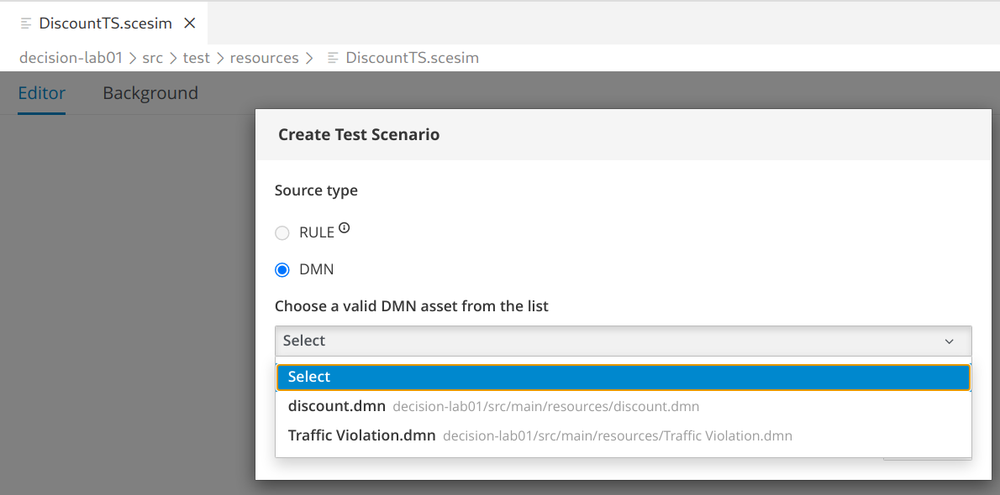

Build Decision Service Logic
In this lab you are going to create a new decision logic from scratch. The main goal is to learn how to build a decision logic taking advantage of the powerful DMN notation.
Before proceeding, you can also review the following tutorials to get a first introduction to the DMN basis:
| This hands on is not going to give you a step by step guidance on how to craft the DMN, it’s structured as a puzzle that you have to solve with some hints. |
Challenge description
A Cart contains multiple items, an item is defined by a category and a price. The outcome of the decision is the Final Price of the cart. A first discount is evaluated on every item in the cart depending on the category: for the food category, the discount is 5% if the price is more than 19 otherwise 2%; for all other categories the discount is 10% if the price is more than 15. Finally, if the overall amount of the cart (after the item discount) is more than 70 then apply an extra discount of 10%.
Start creating the file: discount.dmn inside the project created in the previous hands on.
The folder for DMN and BPMN artefacts is: src/main/resources/.
|
Hints
Create the Data Types
Add:
-
The type for the item:
tItemwithcategoryandprice -
The type for the list of item:
tItemList -
The type for the list of numbers
Create the Decision Requirement Graph
-
The input is the Cart which is a list of item.
-
The output is a decision called Final Price which is a number.
-
Create a Business Knowledge Model called Discount, which goal is to compute the discount for an item.
Implement the Decision Nodes
Open the Discount BKM:
-
the input parameter is
itemtypedtItem -
the output is a
number -
the core of the BKM can be implemented as a decision table:
-
Input clause
item.category(string) -
Input clause
item.price(number) -
Output clause
Discount(number)
-
Open the Final Price decision node:
-
Select
contextas logic type -
Implement the following entries:
-
discounted pricesthe list with the discounted prices -
discounted totalthe sum of the discounted prices
FEEL syntax reminder:
A BKM is function, the syntax is: Discount(item)
The for loop expression iterates over lists of elements or ranges of numbers. The general syntax is:
for i 1 in ic return ewhere ic stands for iteration context and can be:
-
a list
-
a range e.g.
1..10
The function sum return sum of numbers:
list = [1,2,3]
sum(list) -> 6Run locally the Decision Service
-
Start quarkus in dev mode:
mvn quarkus:dev -
Create the file:
src/test/resources/dmn-test.httpwith the following content:POST http://localhost:8080/discount Accept: application/json Content-Type: application/json { "Cart": [ { "category": "electronics", "price": 80 }, { "category": "food", "price": 20 } ] } -
Click on the
Send requestlink to probe the DMN service. In the result page you should spot:"Final Price": 81.9If you haven’t installed the Rest Client plug-in, you can probe the DMN service through the Swagger UI: http://localhost:8080/q/swagger-ui/
Create a Test Scenario
-
Add to the
pom.xmlfile the following dependency:<dependency> <groupId>org.kie.kogito</groupId> <artifactId>kogito-scenario-simulation</artifactId> <scope>test</scope> </dependency> -
Create the Java class
KogitoScenarioJUnitActivatorTest.javain the foldersrc/test/java/testscenario -
Add the annotation
@RunWithas in the snippet:import org.junit.runner.RunWith; import org.kogito.scenariosimulation.runner.KogitoJunitActivator; @RunWith(KogitoJunitActivator.class) public class KogitoScenarioJunitActivatorTest { -
Create the file
DiscountTS.scesimin the foldersrc/test/resources/ -
In the dialogue box
Create Test Scenario-
Select
DMN, thendiscount.dmnandCreatebutton. -
You should get a quite simple table with a column named GIVEN and another named EXPECTED.
-
-
In the GIVEN column, double click on the last cell (there is a place holder text: Insert value)
-
In the pop up window, select
Add list value -
Type
"food"in the category field (make sure to type the double quote") -
Type
20in the price field -
Click the confirmation button (check mark)
-
Click the
Savebutton
-
-
In the EXPECTED column, double click on the last cell (there is a place holder text: Insert value)
-
Type
0
-
-
From a terminal launch the tests:
mvn clean test -
You should get a failure message:
KogitoScenarioJunitActivatorTest #1: Failed in "Final Price": The expected value is "0" but the actual one is "19.00" (DiscountTS) -
Change the test scenario accordingly and run the test again to check the successful execution.
-
Optionally, add other rows to the test scenarios.
Appendix: a possible solution
| DON’T READ THIS SECTION try before to solve the challenge with hints provided above. It’s not important if your solution does not work as expected or it’s different from the following: the philosophy of this hands on is that you can learn more from a failed attempt than from a "guided" success. |